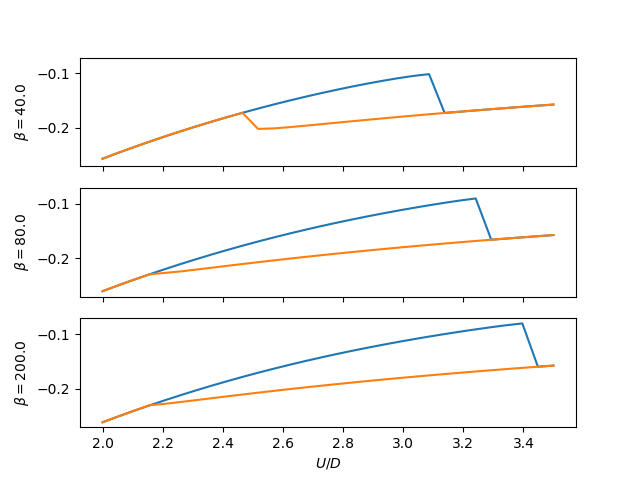

Internal Energy in dimer solutions¶
Within the coexistence region calculate for various temperatures the internal energy of each solution. In the IPT approximation the insulator always presents itself as the lowest internal energy solution.
# Author: Óscar Nájera
from __future__ import division, absolute_import, print_function
import numpy as np
import matplotlib.pyplot as plt
import dmft.common as gf
from dmft import dimer
def loop_urange(urange, tp, beta):
ekin, epot = [], []
tau, w_n = gf.tau_wn_setup(dict(BETA=beta, N_MATSUBARA=2**10))
giw_d, giw_o = dimer.gf_met(w_n, 0., 0., 0.5, 0.)
for u_int in urange:
giw_d, giw_o, _ = dimer.ipt_dmft_loop(
beta, u_int, tp, giw_d, giw_o, tau, w_n, 1e-4)
ekin.append(dimer.ekin(giw_d, giw_o, w_n, tp, beta))
epot.append(dimer.epot(giw_d, w_n, beta,
u_int ** 2 / 4 + tp**2 + 0.25, ekin[-1], u_int))
return np.array(ekin), np.array(epot)
def plot_energy(beta, tp, urange, ax):
met = loop_urange(urange, tp, beta)
ins = loop_urange(urange[::-1], tp, beta)
ax.plot(urange, np.sum(met, 0))
ax.plot(urange, np.sum(ins, 0)[::-1])
ax.set_ylabel(r'$\beta={}$'.format(beta))
fig, ax = plt.subplots(3, 1, sharex=True, sharey=True)
URANGE = np.linspace(2, 3.5, 30)
plot_energy(40., 0.3, URANGE, ax[0])
plot_energy(80., 0.3, URANGE, ax[1])
plot_energy(200., 0.3, URANGE, ax[2])
plt.savefig('IPT_HinU_tp0.3.pdf')
plt.xlabel(r"$U/D$")
plt.show()
Total running time of the script: ( 0 minutes 9.512 seconds)